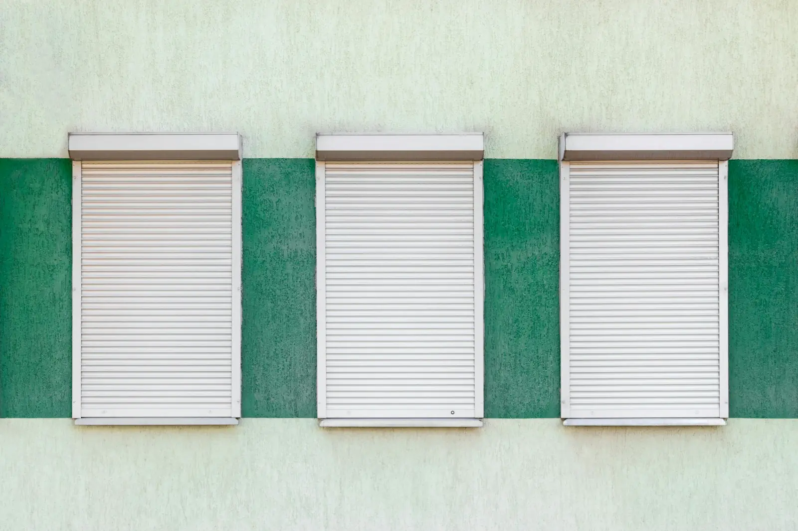

01Panjur
Güneşi, gürültüyü ve meraklı bakışları dışarıda bırakır. Manuel ya da motorlu; dış cepheye veya pencere üstüne monte edilir.
- Poliüretan dolgulu alüminyum lamel
- Motorlu ve uzaktan kumandalı seçenek
- Cepheye uygun renk seçenekleri